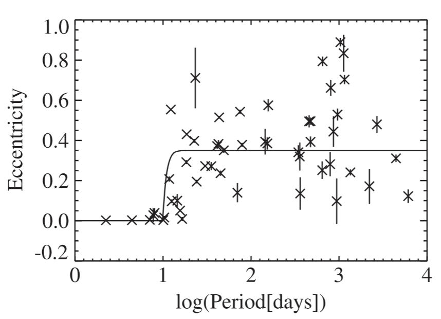

Materials: Zahn 1977, Hut 1981 Hurley et al. 2002, Tauris & Van den Heuvel book, Ch. 5.3.2 of "Tapestry of Modern Astrophysics" by S. N. Shore, Qin et al. 2018, Mirouh et al. 2023
Tides
When considering the effect of a gravitational potential across an extended mass (i.e., whose size is not negligible compared to the size of the system), we need to consider tides due to the difference in gravitational forces across an extended body.
N.B.: Tides are not another fundamental force, but a manifestation of the (vectorial) difference between the gravitational field across points of an extended object.
Consider the simplest case of a binary system with masses \(M\) and \(m\) at a separation \(r\). For simplicity, let's assume \(M\) to be a point mass so we don't have to deal with its structure.
N.B.: This may not be a bad approximation when the star \(M\) is a compact object (NS, BH, or WD).
The gravitational force acting between the two bodies is
If the star \(m\) has a radius \(R_{\star}\), there is a difference in the gravitational force across the side facing the companion and the one facing away, hence a tidal field
If the stellar radius is much smaller than the separation (\(R_{\star}\ll r\) but non-negligible), we can Taylor expand the parenthesis to obtain:
and thus:
To first order in \(R_{\star}/r\), the tidal forces resulting from differences in the gravitational field created by a body scale like \(\propto r^{-3}\), meaning the tidal field drops faster than the gravitational field \(\propto r^{-2}\). For wide systems tides are usually negligible (although this depends also on the masses and radii). Viceversa, for very close binaries, tides can be an important perturbation.
Note also how the tidal force is directed along the separation between the two bodies.
Non-perturbative tides: tidal disruption radius
From the functional dependence on \(r\), we can see that at small separation the tidal field can become strong. Could it exceed the self-gravity of the star \(m\)?
If the separation \(r\) is smaller than the so-called tidal-disruption radius \(r_{\rm TD}\), the tidal field generated by \(M\) will tear apart the star \(m\), that is we get a tidal disruption event.
This usually happens with \(M\simeq M_{\rm SMBH} \gtrsim 10^{6}M_{☉}\), i.e., for stars forming a binary with a super-massive BH (typically on an hyperbolic orbit, if the periastron distance is smaller than \(r_{\rm TD}\)). However, the resulting transient can be detected in electromagnetic observations only if the tidal disruption occurs outside of the event of horizon, that is \(r_{\rm TD} \ge r_{g} = 2GM/c^{2}\), which effectively puts a $(m, R*)$-dependent upper limit on \(M\) for a tidal disruption event to occur.
Tides as a perturbation
Let's now consider the regime \(r\gg r_{\rm TD} (\gg R_{\star})\), in which case (cf. Eq. \ref{eq:tidal_dis_radius}), the tidal field \(\mathbf{T}\) is a small perturbation over the self-gravity of the stars.
N.B.: We can already intuitively expect that the tides are sensitive to \(R_{\star}/r\).
The presence of this perturbation will cause deviations from spherical symmetry (since the perturbation is not a central force!). This means the gas of star \(m\) will have a bulge (more extended than a sphere along the separation), and \(\nabla\rho\times\nabla P \ne 0\).
Consider now the interplay between tides and stellar rotation. If the star is rotating non-synchronously with the orbit (i.e., \(\omega_{\rm surf}\ne\omega_{\rm orb}\)), then the bulge will lag (if \(\omega_{\rm surf}<\omega_{\rm orb}\)) or anticipate the orbit (if \(\omega_{\rm surf}\ge\omega_{\rm orb}\), which is a situation observed in nature, cf. Britavskiy et al. 2024, Naze et al. 2026).
The deformation induced by tides, combined with the lag/anticipation make the structure of star \(m\) not match equipotential surfaces: we have an "out-of-equilibrium" situation! In the limit of small tides, these will generate perturbations on the structure: the bulge is not aligned with equipotentials, therefore the gas feels gravitational forces (due to the gradient of the potential that is not vanishing) that accelerate it and provide it with kinetic energy (taken from the orbital energy by means of the tides). Similarly, this force can torque the gas, allowing for angular momentum exchanges between the orbit and the star.
This excess kinetic energy (w.r.t. the same star \(m\) in isolation) usually manifests itself as waves excited in the star. The key question for tidal evolution is how are these waves excited by tides dissipated? The dissipation rate determines the coupling between the structure of star \(m\) and the orbit, and thus the (poorly known) rate at which the system will recover equilibrium.
For a circular binary, every half-period the situation is identical by symmetry, so we can deduce the dominant time-frequency for the effects of tides:
which implies that tides act much slower than the dynamical timescale: the perturbations that they induce can be treated in a "quasi-static" approximation (the gas velocity induced by the tidal perturbations are very small compared to thermal velocities).
We have already implicitly defined the equilibrium condition that the dissipation of tidal perturbation aims for! If \(\omega_{\rm surf}=\omega_{\rm orb}\) there is no lag/anticipation, and star \(m\) fills equipotentials of the combined potential of the two bodies \(M\) and \(m\). However, this works only if there is no change in orbital velocity across the orbit, so only for circular binaries! In the case of an eccentric binary, the bulge may not be able to follow the change in equipotential surfaces along the orbital period. Therefore, the equilibrium condition (which minimizes the orbital energy of the system) is both:
- circularization of the orbit (\(e=0\))
- synchronization of rotation and orbital revolution (\(\omega_{\rm surf}=\omega_{\rm orb}\))
If an binary fulfills condition 2. with \(e\ne0\), we talk about pseudo-synchronization, while both 1. and 2. correspond to a fully synchronized orbit.
Tidal evolution for a generic orbit
For a generic orbit with arbitrary eccentricity and non-synchronized rotation rate of \(m\), we expect tides to couple orbital energy and angular momentum with the stellar structure (formation and torquing of the bulge).
Since the orbital angular momentum greatly exceed the stellar spins, \(J_{\rm orb} \gg J_{\rm spin}\) (think that the orbital separation is a much larger lever arm than the stellar radii!), we should expect that changing the angular momentum of the stars is easier than changing the orbit, that is, we expect pseudo-synchronization of the rotation with the orbit before the orbit can circularize.
The timescales for pseudo-synchronization and circularization are determined by the processes by which the tidal perturbations are dissipated in the star \(m\) feeling the tides. These are an active area of study, and depend on the structure of the envelope of the star where the tides are stronger and most perturbing
- Convective envelopes: the turbulent cascade within the convective region pumps the extra energy provided by tides to small scales until the gas viscosity dissipates it into heat. This process is very efficient, so we can assume the tidal bulge to be hydrostatic albeit misaligned, and use this to calculate the torques and dissipation timescale. In this case we talk about equilibrium tides.
- Radiative envelope: tides excite waves in the stably stratified envelope, meaning we need to consider the dynamics of the gas in the envelope. These waves can be gravity waves (restoring force is buoyancy), pressure waves (restoring force is pressure gradient), or inertial wave (restoring force is Coriolis) - see also lecture on asteroseismology.
For the latter case, the problem becomes determining which waves (and modes) are excited in the star, how they propagate and eventually dissipate.
The dominant paradigm to treat this is the radiative dissipation model from Zahn 1977: the idea is that as waves travel to the surface at lower optical depth, radiation can leak out causing the waves to lose energy. Note however that Zahn's calculations of the tidal pseudo-synchronization and circularization timescales implemented in many codes are based on zero-age main sequence models of massive stars with radiative envelopes: because of the core-evolution during the main sequence, this in general underestimates the size of the envelope (the core shrinks as the star evolve), and can lead to underestimating the timescales (i.e., overestimating the impact of tides).
A key problem is if these waves can hit resonances in the stellar structure: resonant waves may not damp at all!
Observational evidence: P(e) diagram
As we have seen above, when the size of the stars is non-negligible compared to the size of an orbit, the tides resulting from the differences in the gravitational field across the star couple the stellar structure (spin and energy profile) with the orbit. Modeling this coupling requires in general considering out-of-equilibrium stellar structure, wave dissipation, and is an active area of research. So how do we know that tides matter? Although we cannot directly see the interior structure of stars possibly affected by tides, we can see binary orbits!

The figure above exemplifies the kind of observations that can be used to constrain tides. Using multi-epoch spectroscopic campaigns, one can measure the orbital properties of binaries (including \(P\leftrightarrow\omega_{\rm orb}\) and \(e\)). Focusing on a specific cluster, one can analyze a co-eval population of binaries.
The significant lack of eccentricity for \(P\lesssim 10\) days suggest that for such short period the circularization timescale by tides is short compared to the lifetime of these binaries. At large \(P\) instead any eccentricity is possible, suggesting a certain initial distribution of eccentricities and negligible impact of tidal interactions.
N.B.: this example is representative: many clusters show qualitatively similar \(e(P)\) distributions with the "circularization period" (i.e., the period below which all binaries are consistent with \(e\approx0\)) mildly depending on the age of the cluster, see for example Meibom & Mathieu 2005.